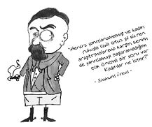

Sigmund Freud (1856-1939)
Sigismund Scholomo Freud. Avusturyalı nörolog. Psikanalizin kurucusu.
Yahudi bir tüccarın oğlu olarak dünyaya geldi. Annesinin çok genç yaşta evlilik dışı bir ilişkiden Freud’a hamile kaldığı ve dedesinin kızını para karşılığı bu tüccar ile evlendirdiği, hatta 6 Mart 1856 olan doğum tarihinin anne-babasının evlilik tarihine uysun diye iki ay farkla 6 Mayıs 1856 olarak yazıldığı bir söylenti olarak dolaşsa da, bu iddialar resmen kayıt altına alınmış değildir.
Araştırmacılara göre, Sigmund’un annesi Freud’ların evine geldiği zaman, babası Jacob’un ilk eşinden olma Emmanuel ve Philippe adında iki tane çocuğu vardır. Bunların yaşı Freud’un annesi Amelie’nin yaşıyla eşittir. Jacob’un çıktığı iş gezilerinde Philippe ile Amelie arasında cinsel bir yakınlaşma vuku bulur. Freud bu duruma defalarca tanık olur ve annesine “kışkırtıcı dişi” gözüyle bakar.
Bu yaşadıkları Freud’un ileriki hayatını ve çalışmalarını büyük ölçüde etkileyecektir.
Lise yıllarında Latince, Fransızca ve İngilizce öğrenmesi yetmiyormuş gibi daha sonra kendi çabalarıyla İbranice, İspanyolca ve İtalyancayı da öğrenir. Üniversite yıllarında Yahudi düşmanlığıyla karşılaşarak toplumun dışına itilir.
Tıp öğrenimini bitirince, bir psikiyatr kliniğinde asistan olarak çalışmaya başlar. Burada kokain üzerine bir inceleme yapmakla görevlendirilir. Kokainin analjezik özelliklerini keşfeder, anestezik niteliklerini ise sezinler. 1885’te kokain kullanımını önerir ve bundan ötürü şimşekleri üstüne çeker. Çok sevdiği bir dostu Freud’un önerisiyle aldığı kokain sebebiyle ölür.
1893-1898 yılları arasında hipnoz, anksiyete ve obsesyonlar üzerine yoğunlaşır. Bu dönem içerisinde ruh çözümleme ve Oedipus kompleksi gibi teorilerini oluşturur. Bu kavramlar büyük yankılara ve bu alanda artan ilgiye neden olur. 1900’de Rüyaların Yorumu adlı kitabını yayımlar.
Hayranları gibi düşmanlarının sayısı da çoktur. Hayranları tarafından kendisine “düşüncenin Kolomb’u” diye hitap edilmiş, öte yandan da karşıt görüşte olanlar tarafından “sapık” olarak görülmüştür.
1938’de Nazilerin Viyana’ya girmesiyle birlikte küçük kızı Anna’yı yanına alarak Londra’ya yerleşir. Ölümüne dek çalışmalarına burada devam eder.
Kendini iyi hissetmek için yuttuğu kokainler ve her gün içtiği yirmi tane puro sebebiyle ağız kanserine yakalanan Freud, otuz üç kez ameliyat olur. Sürekli protez takması gerekliliğinden dolayı uzun yıllar konuşma ve yemek yeme sıkıntısı çeker.

Defalarca intihar etmeyi deneyen Freud, acıları dayanılmaz hâle geldiği zaman özel doktorunu yanına çağırır ve yıllar öncesinde konuştukları gibi, ölmesine yardım etmesini ister. 22 Eylül’de doktorunun yaptığı morfin sonucu derin bir komaya girer ve yaşamı noktalanır. Arzu ettiği üzere yakılır ve Marie Bonaparte’ın hediye ettiği Yunan vazosu içinde Golden Green mezarlığında gömülür.
Neymiş id, ego ve süperego…
Freud kişiliğin üç yapıdan oluştuğunu savunur; id, ego ve süperego. İd, kişiliğin en ilkel bölümüdür. İstekleri, arzuları hemen yerine gelsin isteyen yaramaz bir çocuk gibidir. İki temel isteği vardır; cinsellik ve saldırganlık... Süperego kişiliğin toplumsal yanını ifade eder. Bir anlamda kişinin vicdanıdır. Ego ise bu ikisi arasında dengeyi kurmaya çalışır. Psikolojide ego, iki efendisi olan bir uşağa benzetilir.
Mesela id’iniz çok fazla gelişmişse içinizde küçük bir Coşkun filizleniyor demektir. Süperegonuz çok fazla gelişmişse çekingen, içine kapanık, kızgınlığını çok nadiren ifade eden, kendinden çok başkalarını düşünen bir kişiyle karşı karşıyayızdır.
Freud’un buzdağı benzetmesi işte bu id, ego ve süperegoyla bağlantılıdır. Freud’a göre insan bilinci bir buzdağına benzer. İdin tümü, süperegonun en büyük kısmı ve egonun oldukça büyük kısmı bilinçaltındadır. Yani bilincinde olduğumuz kısım oldukça azdır. Buzdağının büyük çoğunluğunun su altında olması gibi...
Ne demiş Freud…
• Okyanusta yüzen acı dolu küçük bir ada gibiyim.
• Bırakın adalet yerini bulsun, isterse kıyamet kopsun.
• İsmini unuttuğunuz kişi hakkında muhakkak olumsuz bir düşünceniz vardır.
• Hiçbir erkek birlikte olmak istemeyeceği bir kızla yakın arkadaş olmak istemez.